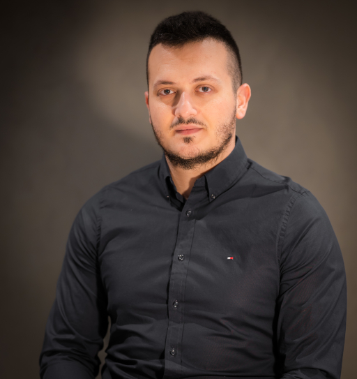
Welcome to my personal website!
I am a Postdoctoral Researcher at the University of Cambridge, working with Prof. José Miguel Hernández-Lobato. I received my B.Sc. in Electrical Engineering from Ben-Gurion University of the Negev in 2017, and my Ph.D. (direct track) from the Department of Electrical Engineering at Tel Aviv University in 2024, under the supervision of Prof. Raja Giryes.
My research focuses on generative modeling, inverse problems, and signal processing. I am particularly interested in developing principled learning frameworks that combine classical signal processing insights with modern deep generative models. My work explores diffusion-based models, adversarial learning, and adaptive training strategies, with the goal of improving robustness, generalization, and interpretability in challenging learning and inference settings.
More broadly, I aim to design theoretically motivated methods that enable reliable learning under uncertainty and limited or imperfect observations.
Email: shady dot abh at gmail dot com
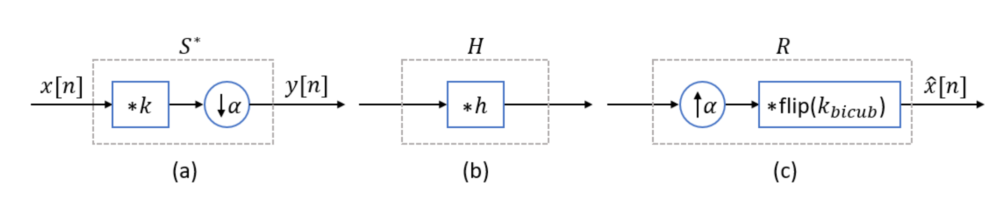
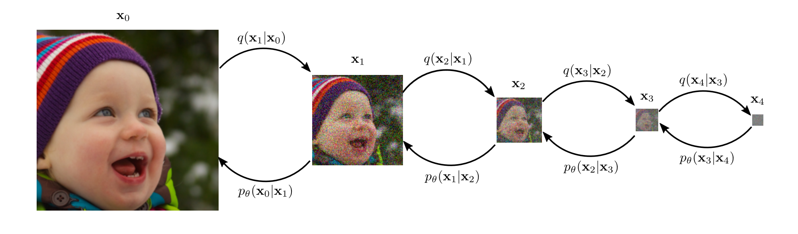
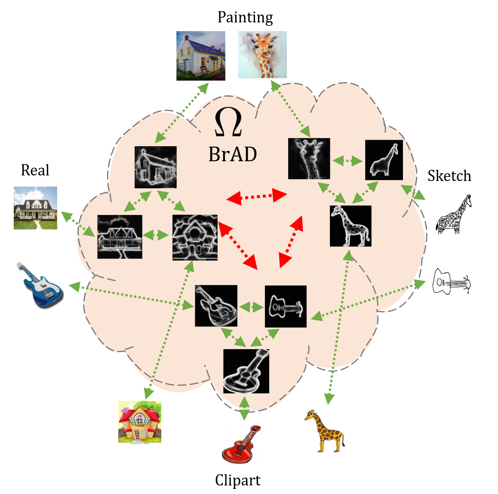
Sivan Harary, Eli Schwartz, Assaf Arbelle, Peter Staar, Shady Abu-Hussein, Elad Amrani, Roei Herzig, Amit Alfassy, Raja Giryes, Hilde Kuehne, Dina Katabi, Kate Saenko, Rogerio Feris, and Leonid Karlinsky
CVPR, 2022
Paper Code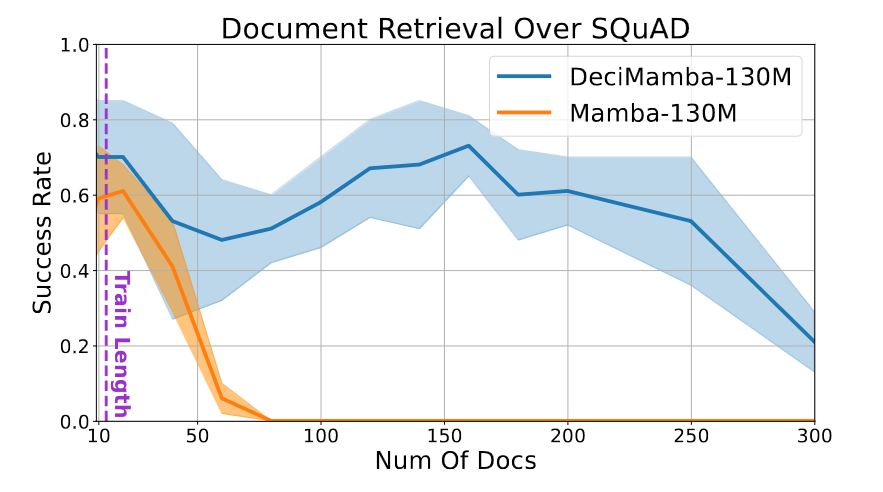
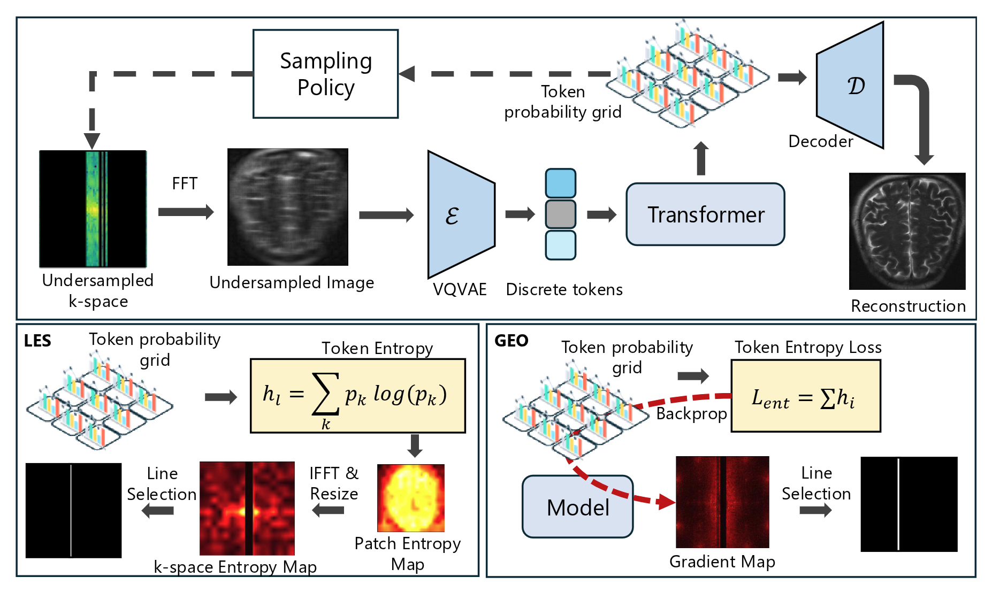
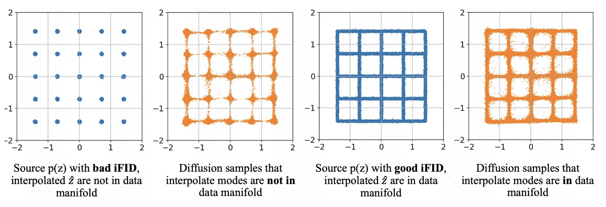
Tongda Xu, Mingwei He, Shady Abu-Hussein, Jose Miguel Hernandez-Lobato, Haotian Zhang, Kai Zhao, Chao Zhou, Ya-Qin Zhang, Yan Wang
Preprint
Paper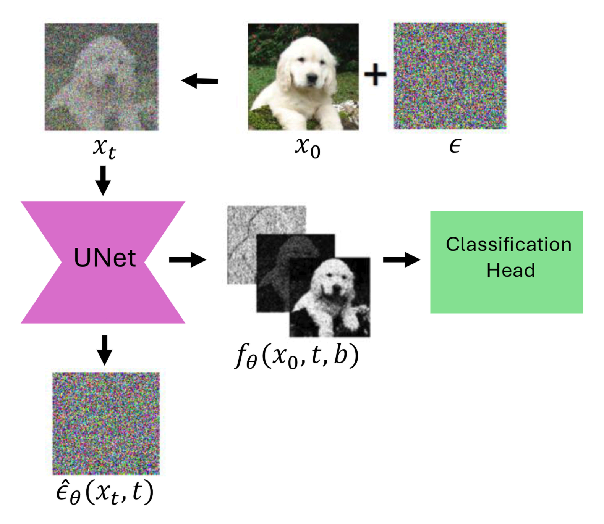
Mika Yagoda, Shady Abu-Hussein, and Raja Giryes
IEEE Signal Processing Letters, 2025
Paper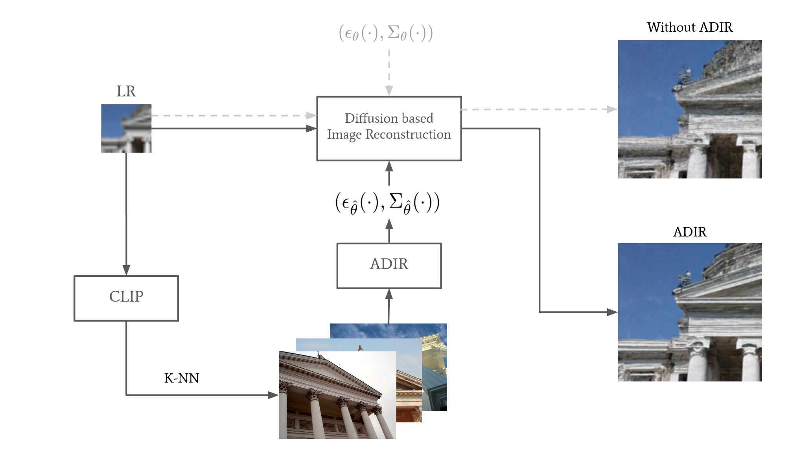
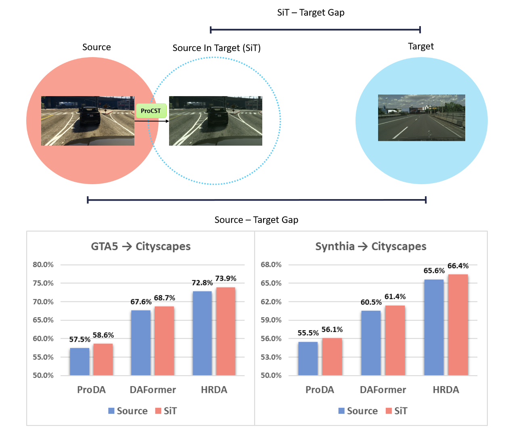
Shahaf Ettedgui, Shady Abu-Hussein, and Raja Giryes
Scientific Reports, 2025
PaperSivan Harary, Eli Schwartz, Assaf Arbelle, Peter Staar, Shady Abu-Hussein, Elad Amrani, Roei Herzig, Amit Alfassy, Raja Giryes, Hilde Kuehne, Dina Katabi, Kate Saenko, Rogerio Feris, and Leonid Karlinsky
CVPR, 2022
Paper Code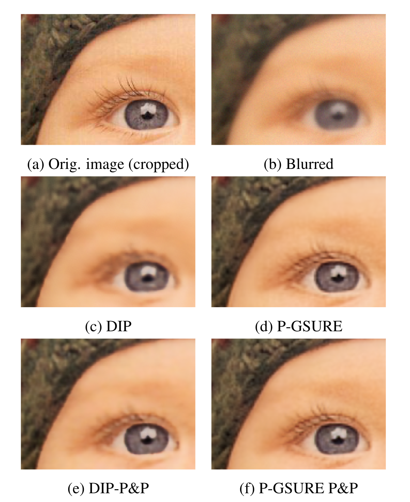
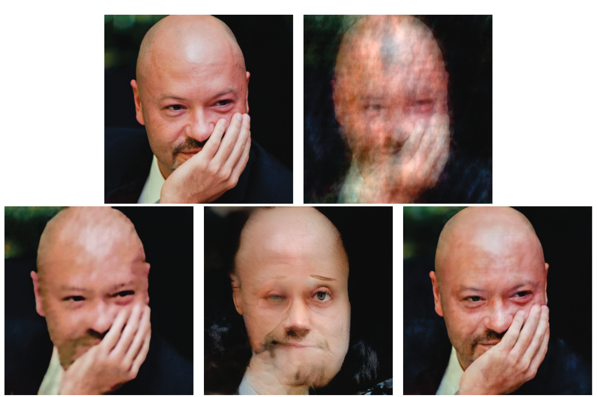